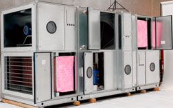
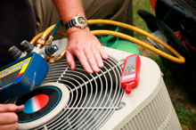
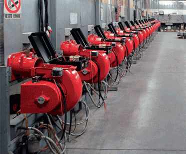
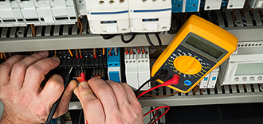

Сервіс:
Одним з основних видів діяльності нашої компанії є сервісне обслуговування таких інженерних систем:
Для цих цілей ми маємо сервісну службу, яка має достатню технічну базу для проведення сервісних робіт. Фахівці сервісної служби пройшли відповідне навчання і мають великий досвід роботи.

Надійність і стабільність роботи систем вентиляції залежить від безлічі факторів. В першу чергу,
це виробництво, монтаж і правильна установка системи. Але при цьому істотну роль грає і регулярне сервісне
обслуговування системи вентиляції, в яке входять профілактичні роботи і регулярний огляд системи.
Це допоможе обійтися без збоїв системи вентиляції під час експлуатації.
Сервісне обслуговування повинно проводитися для всіх сучасних системах вентиляції, оскільки воно гарантує
знаходження системи вентиляції в робочому стані протягом усього терміну експлуатації.
Сервісне обслуговування системи вентиляції, що проводиться компанією "СпецКомплекс", включає широкий
перелік регламентних робіт, основні з яких це:

Своєчасне профілактичне обслуговування кондиціонерів - це важлива умова для довговічної роботи
кліматичного обладнання. Будь-яка система кондиціонування рано чи пізно починає вимагати ремонту,
однак, щоб відстрочити цей момент, необхідно проводити періодичне обслуговування кондиціонерів.
Тільки в такому випадку можна досягти стабільної і довгострокової роботи систем кондиціонування з
мінімальними матеріальними витратами.
Необхідними умовами для надійної і довговічною роботи системи кондиціонування є якісний монтаж кондиціонерів,
а також періодичне обслуговування кондиціонерів і при необхідності проведення їх дрібного профілактичного
ремонту. Тільки регулярне і професійне обслуговування кондиціонерів допоможе зберегти їх працездатність
на довгий період часу.
Перелік основних робіт при проведенні сервісного обслуговування холодильних машин:
Перелік основних робіт при проведенні сервісного обслуговування кондиціонерів типу «Спліт», «Мультисплит»:
Перелік основних робіт при проведенні сервісного обслуговування центральних кондиціонерів:
Перелік основних робіт при проведенні сервісного обслуговування автономних кондиціонерів:
Фахівці сервісного відділу "СпецКомплекс" регулярно проходять атестацію у відповідних компаніях
- світових виробниках систем кондиціонування. Такий підхід до сервісного обслуговування кондиціонерів
дозволяє компанії виконувати всі ремонтні роботи максимально ефективно. Таким чином, ремонт кондиціонерів
фахівцями компанії - це високопрофесійний підхід до надійної і довговічної роботі цих систем.
Ви думаєте, як встановити кондиціонер? Де знайти кращих фахівців, які здійснять підключення кондиціонера
на високому професійному рівні? Тоді Вам необхідно звернутися в компанію «СпецКомплекс».

Сервісне обслуговування котлів та газових пальників (регламентні роботи) повинно проводитися не рідше
одного разу на рік, а під час проведення будівельних робіт - два рази. Це істотно зменшує ризик виходу
котла з ладу і попереджає можливі ремонтні роботи. Технічне обслуговування проводять в кінці опалювального
сезону або на початку опалювального сезону.
Сервісне обслуговування полягає в наступному:
 У разі якщо Ви маєте в своєму розпорядженні обладнанням систем автоматики і диспетчеризації, яке з якихось причин відмовився обслуговувати постачальник, загублена документація або просто Ваше обладнання потребує сервісі або регулярному обслуговуванні, наші фахівці в найкоротші терміни приведуть Вашу систему в робочий стан, підготують документацію, і при необхідності будуть обслуговувати.